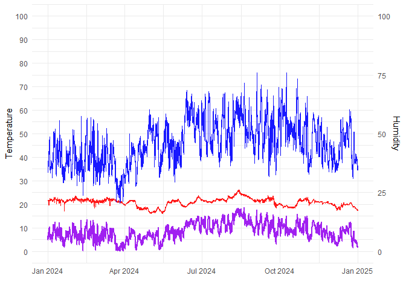
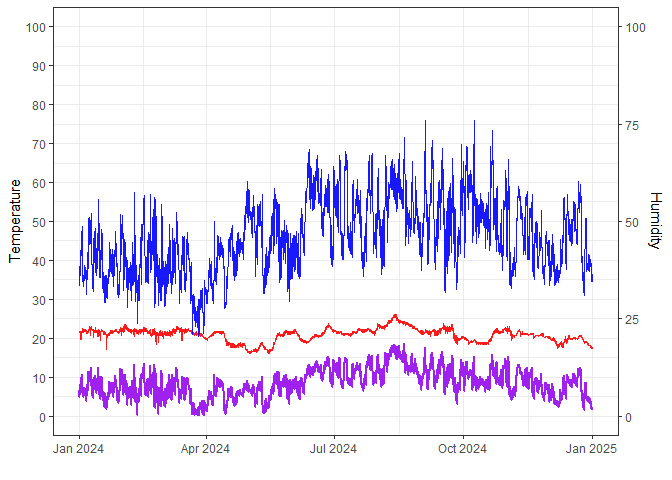

ConSciR is an R package specifically designed to assist conservators and scientists by providing a toolkit for performing essential calculations and streamlining common tasks in conservation. ConSciR is designed for:
- Conservators working in museums, galleries, and heritage sites
- Conservation scientists and researchers
- Cultural heritage professionals involved in preventive conservation
- Students and educators in conservation and heritage science programs
Learn more about ConSciR here: ConSciR webpage
The ConSciR Github page: ConSciR Github
Tools available
- Calculations: dew point, absolute humidity, water vapour pressure, mixing ratio, enthalpy
- Graphs: TRH plots, psychometric chart
- Summaries: percentiles
- Analysis:
- Tidying data:
Installation
You can install the development version of ConSciR from GitHub with:
# install.packages("pak")
pak::pak("BhavShah01/ConSciR")-or-
# install.packages("devtools")
devtools::install_github("BhavShah01/ConSciR")Example
This is a basic example of some commons tasks:
- Load packages
- Pre-loaded dataset is availabe for testing
# My TRH data
head(mydata)
#> # A tibble: 6 × 5
#> Site Sensor Date Temp RH
#> <chr> <chr> <dttm> <dbl> <dbl>
#> 1 London Room 1 2024-01-01 00:00:00 21.8 36.8
#> 2 London Room 1 2024-01-01 00:15:00 21.8 36.7
#> 3 London Room 1 2024-01-01 00:29:59 21.8 36.6
#> 4 London Room 1 2024-01-01 00:44:59 21.7 36.6
#> 5 London Room 1 2024-01-01 00:59:59 21.7 36.5
#> 6 London Room 1 2024-01-01 01:14:59 21.7 36.2- Use functions to perform calculations, for example use the existing data to add dew point and absolute humidity. Performance metrics are also being added like lifetime multiplier, preservation index and mould calculations.
# Peform calculations
head(mydata) |>
mutate(
DewPoint = calcDP(Temp, RH),
AbsHum = calcAH(Temp, RH),
LifeTime = calcLM(Temp, RH, EA = 100),
PreservationIndex = calcPI(Temp, RH))
#> # A tibble: 6 × 9
#> Site Sensor Date Temp RH DewPoint AbsHum LifeTime
#> <chr> <chr> <dttm> <dbl> <dbl> <dbl> <dbl> <dbl>
#> 1 London Room 1 2024-01-01 00:00:00 21.8 36.8 6.41 7.05 1.85
#> 2 London Room 1 2024-01-01 00:15:00 21.8 36.7 6.37 7.03 1.85
#> 3 London Room 1 2024-01-01 00:29:59 21.8 36.6 6.33 7.01 1.85
#> 4 London Room 1 2024-01-01 00:44:59 21.7 36.6 6.24 6.97 1.85
#> 5 London Room 1 2024-01-01 00:59:59 21.7 36.5 6.20 6.95 1.86
#> 6 London Room 1 2024-01-01 01:14:59 21.7 36.2 6.08 6.90 1.86
#> # ℹ 1 more variable: PreservationIndex <dbl>- Graphs
# Produce graphs
mydata |>
graph_TRH()
mydata |>
mutate(DewPoint = calcDP(Temp, RH)) |>
graph_TRH() +
geom_line(aes(Date, DewPoint), col = "purple", size = 1) +
theme_bw()